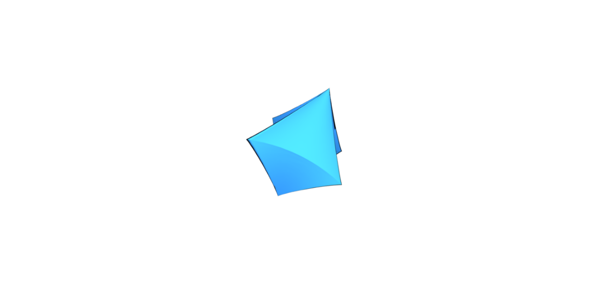
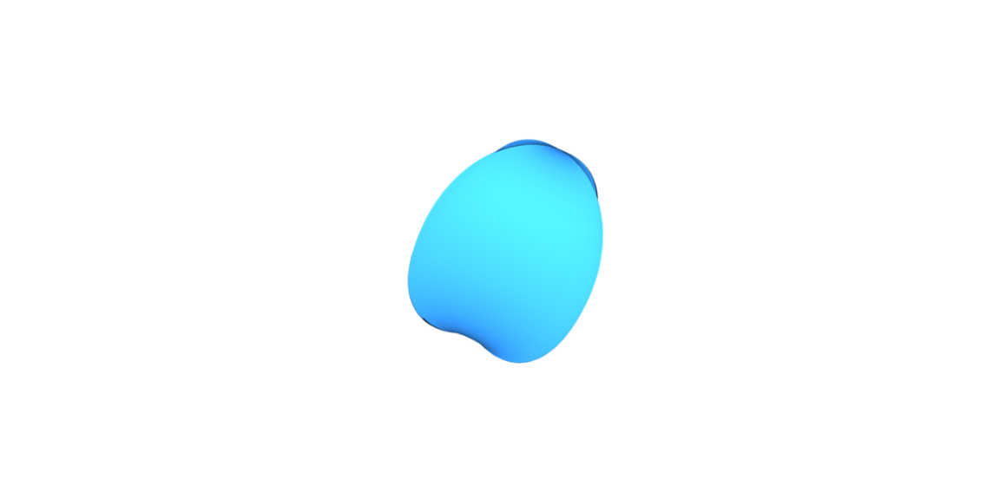
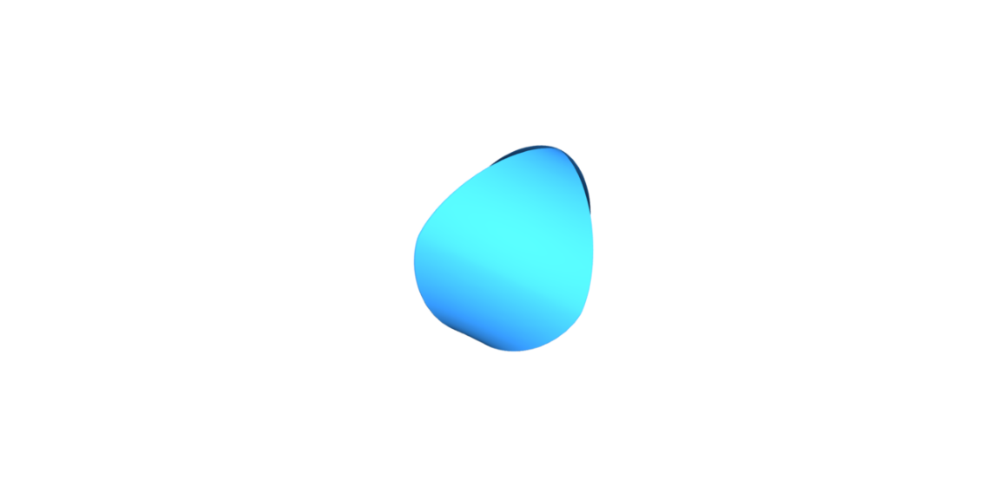
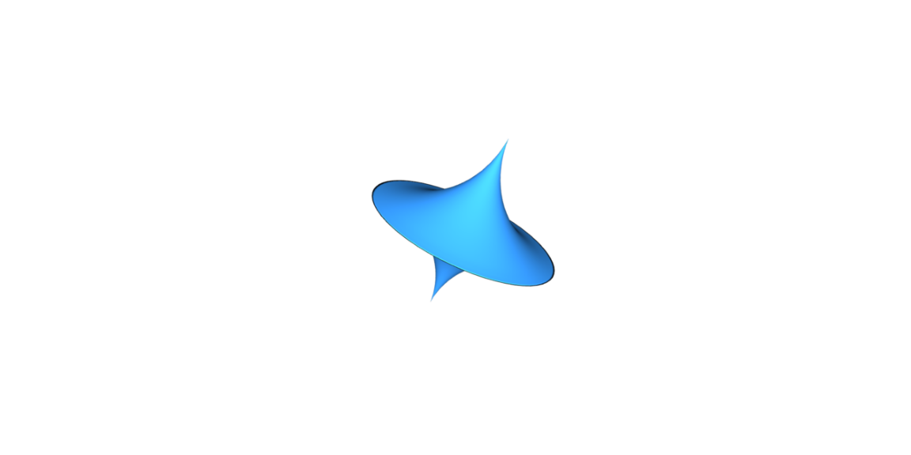

<!DOCTYPE html>
<html>

<head>

    <meta charset="UTF-8">
    <title>Gestalt Perception Experiment</title>
    <script src="jspsych-6.3.1/jspsych.js"></script>
    <script src="jspsych-6.3.1/plugins/jspsych-video-button-response.js"></script>
    <script src="jspsych-6.3.1/plugins/jspsych-instructions.js"></script>
    <script src="jspsych-6.3.1/plugins/jspsych-survey-text.js"></script>
    <script src="jspsych-6.3.1/plugins/jspsych-preload.js"></script>
    <script src="https://ajax.googleapis.com/ajax/libs/jquery/3.5.1/jquery.min.js"></script>
    <link href="jspsych-6.3.1/css/jspsych.css" rel="stylesheet" type="text/css">
    <script src="https://cdn.plot.ly/plotly-latest.min.js"></script>
    <link rel="stylesheet" href="https://stackpath.bootstrapcdn.com/bootstrap/4.3.1/css/bootstrap.min.css"
        integrity="sha384-ggOyR0iXCbMQv3Xipma34MD+dH/1fQ784/j6cY/iJTQUOhcWr7x9JvoRxT2MZw1T" crossorigin="anonymous">
</head>

<body>
</body>
<script>
    function shuffle(array) {
        var currentIndex = array.length, temporaryValue, randomIndex;

        // While there remain elements to shuffle...
        while (0 !== currentIndex) {

            // Pick a remaining element...
            randomIndex = Math.floor(Math.random() * currentIndex);
            currentIndex -= 1;

            // And swap it with the current element.
            temporaryValue = array[currentIndex];
            array[currentIndex] = array[randomIndex];
            array[randomIndex] = temporaryValue;
        }

        return array;
    }

    function getTrial(scene_dir) {
        var stims = shuffle(['gt_mesh.png', 'distractor_1.png']);
        var trial_data = { 'scene_dir': scene_dir,
                            'answer': stims.indexOf('gt_mesh.png') 
                        }

        fetch('images/' + scene_dir + '/params.json',
            { 'mode': 'cors', 'credentials': 'same-origin' }).then(response => response.json())
            .then(data => {
                var mesh_0 = data['mesh_0']['exponents']
                var mesh_1 = data['mesh_1']['exponents']
                trial_data['gt_params'] = mesh_0
                trial_data['distractor_params'] = mesh_1
                trial_data['distance'] = (mesh_0[0] - mesh_1[0]) ** 2 + (mesh_0[1] - mesh_1[1]) ** 2
            })

        var buttons_html = [`
                    <p> Option 1: </p>
                    <button class="jspsych-btn" style="width: 100%; height:25%;">
                        
                    </button>
                    `,
        `<p> Option 2: </p>
                    <button class="jspsych-btn" style="width: 100%; height:25%;">
                        
                    </button>
                    `,

        ]
        
        var trial = {
            type: 'video-button-response',
            choices: stims,
            prompt: '<br><br>Which shape matches the one from the video?',
            stimulus: [`videos/${scene_dir}.mp4`],
            button_html: buttons_html,
            data: trial_data,
            on_finish: function(data) { 
                if (jsPsych.pluginAPI.compareKeys(data.response, data.answer)) {
                    data.correct = true;
                } else {
                    data.correct = false;
                }
            }
        }

        return trial;
    }

    async function setUpTimeline() {

        var timeline = [
            { type: 'preload',
            auto_preload: true },
            {type: 'survey-text',
            questions: [{prompt: "What's your name / user id?", name: 'user_id'}]
            }
        ];

        var instruction_pages = [
            // Page 1
            '<p>Welcome to the experiment! To navigate through these instructions, press the forward and back buttons, or use the right and left arrows.</p>',
            
            // Page 2
            `<p>In this experiment you will be asked to identify a shape by watching a video where the shape rotates 360 degrees, like this:</p>
            <video autoplay muted>
                <source src="videos/instructions/no_texture.mp4" type="video/mp4">
            </video>`,
           
            // Page 3
            `<p>The shapes in question will be camoflauged with dots. Your job is to determine the correct shape. </p>
             <p> For example, in this video: </p>
                <video autoplay muted>
                    <source src='videos/instructions/plain_example.mp4' type='video/mp4'>
                </video> 
            <p> The underlying shape looks like: </p>
                `,
            
            // Page 4
            `<p> During the experiment, you will need to choose between two possible shapes. </p>
             <p> Sometimes the two candidate shapes will look very similar, like these two examples: <p>
            <div>
                 
                 
            </div>
             <p> Sometimes they will look very different, like these two examples: </p>
             <div>
                 
                 
            </div>
            <p> The video will only play once, so do your best to guess the correct answer even when it may not be obvious.</p>`,
             
             // Page 5
             '<p> If you think you know the correct answer before the video finishes, feel free to select it and move on! </p>',

            // Page 6
            `<p> You will see three phases of examples: </p>
             <p> In the <strong>first phase</strong>, there will be no background. 
                In the <strong>second phase</strong>, the background will have the same texture as the shape. 
                In the  <strong>last phase</strong>, the texture in the background will move at a similar rate as the shape itself.
            </p>`,

             // Page 7
            '<h3> Ready to begin? </h3>'
        ];

        var instructions = {
            type: 'instructions',
            pages: instruction_pages,
            show_clickable_nav: true
        }
        
        timeline.push(instructions);

        scene = 0;
        trials = []
        for (var i = 0; i < 10; i++) {
            if (i == 30 || i == 60) {
                scene += 20;
            }
            var scene_dir = `scene_${String(scene).padStart(3, '0')}`;
            trial = getTrial(scene_dir);
            trials.push(trial);
            scene += 1;
        }

        function save_data() {
            jsPsych.data.displayData();
            var data = jsPsych.data.get();
            var user_id = data.filter({trial_type: 'survey-text'}).select('user_id');
            if (!user_id) {
                user_id = jsPsych.randomization.randomID(15);
            }
            data['user_id'] = user_id

            fetch('save_json.php', {
                method: 'POST', 
                mode: 'cors', credentials: 'same-origin', 
                headers: {'Content-Type': 'application/json'}, 
                body: JSON.stringify(data)
            });
        }

        await Promise.all(trials).then(trials => {
            timeline.push(...trials);
            jsPsych.init({
                timeline: timeline,
                show_progress_bar: true,
                on_finish: save_data
            })
        })   
    }


    setUpTimeline();

</script>

</html>